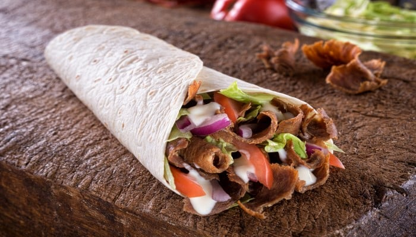

Sastojci
- 500g junetine
- 4 tortilje (velike)
- 200g salate (zelena ili kupus)
- 100g cherry rajčica
- 100g feta sira
- 100ml jogurta
- 2 češnja češnjaka
- 1 žličica mljevene paprike
- 1 žličica kumina
- Sol i papar po ukusu
Postupak pripreme
- Izrežite junetinu na trakice i marinirajte s mljevenom paprikom, kuminom, solju i paprom.
- U tavi zagrijte malo ulja i popržite juneće trakice dok ne postanu zlatno smeđe.
- Pripremite umak od jogurta: pomiješajte jogurt s usitnjenim češnjakom i malo soli.
- Na tortilje rasporedite salatu, nasjeckane rajčice i feta sir.
- Dodajte prženo meso i prelijte jogurtovim umakom.
- Zarolajte tortilje u čvrsti rolat i poslužite.
